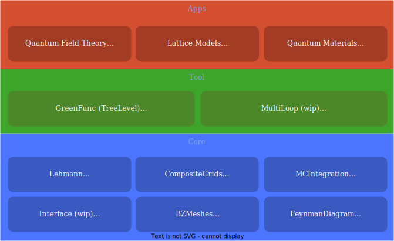

NumericalEFT.jl
Numerical effective field theory toolbox for quantum many-body problem.


Motivation
Collective modes of quantum many-body systems are often well described by weakly-interacting quantum fields. Effective field theory (EFT) is a framework to systematically study such problems. EFT has been widely used in high-energy physics, nuclear physics and condensed matter physics.
For quantum material applications, EFTs are often too complicated to calculate with bare hands. Therefore, we are motivated to create a numerical package for such problems.
Potential applications of this package are the electron liquids and superconductors in real materials, chiral EFT in neutron-rich matter, and all kinds of emergent low-energy field theories in lattice models.
Features
The package $NumericalEFT.jl$ is a collection of loosely coupled components. They are organized in the following infrastructure:

Most of the components have been published as independent packages, so that user has the freedom to try them separately. The package is in development stage. Many components are still missing. Here we list the components that are ready for applications:
Lehmann.jl: Discrete Lehmann representation (DLR) for imaginary-time/Matsubara frequency Green's function. For a generic Green's function at a temperature T, DLR is capable of representing it up to a given accuracy ϵ with a cost ~ log(1/T)log(1/ϵ), signicantly cheaper than a naive approach with a cost ~ 1/(Tϵ).
FeynmanDiagram.jl: High-order Feynman diagram builder for general quantum many-body systems. The diagrams are compiled into an expression tree for subsequent efficient evaluations using a MC integrator. It Supports propagator/interaction renormalization, which is important for renormalization group analysis.
MCIntegration.jl: An adapative Monte Carlo calculator for general high dimensional integral. It is particularly suitable to calculate multiple integrals that are strongly correlated, for example, the Feynman diagrams.
CompositeGrids.jl: Composite Cheybeshev/Gaussian/logarithmic grid systems for one-dimensional interpolation and integration. It allows the user to combine different grids to represent one highly non-smooth functions.
GreenFunc.jl: A container for generic Green's functions.
<!– - Fast elementary math functions. Some of them are adapted from the package Yeppp.jl. It supports more generic array types than the original package. –>
Questions and Contributions
Contributions are very welcome, as are feature requests and suggestions. Please open an issue if you encounter any problems.